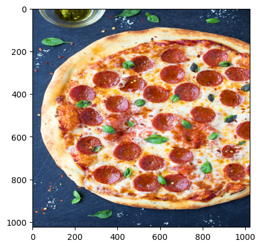
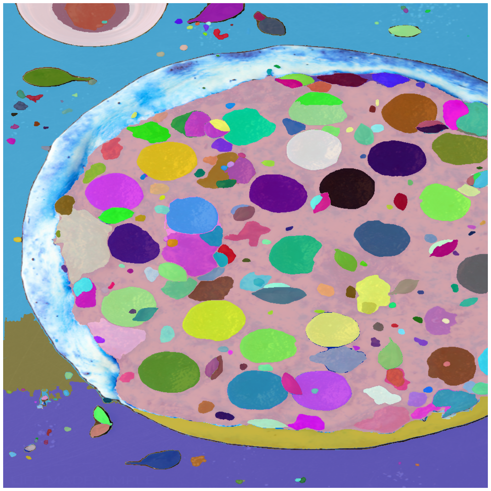
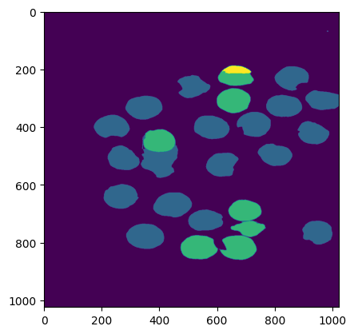
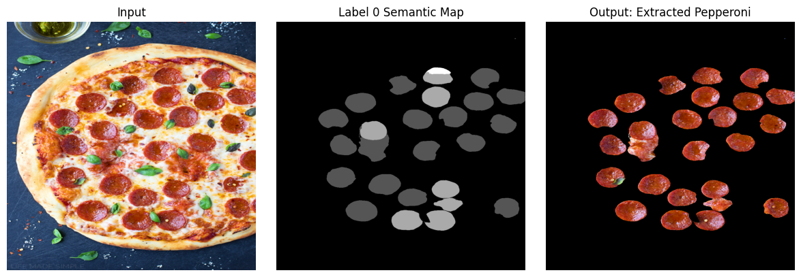

Meta-AI SAM: AutoMatic Semantic Segmentation #
Date: November 26, 2023 #
NOTE: #
- The NB was originally developed on Kaggle: https://www.kaggle.com/code/yogendrayatnalkar/finetuning-segment-anything
- Related Github Repository: https://github.com/yogendra-yatnalkar/SAM-Automatic-Semantic-Segmentation
Task: #
Semantically segment objects from image AUTOMATICALLY with the help of META AI SAM, without PROMPTS/TRAINING #
Segment all the pepperoni pieces from the pizza topping #

Approach: #

1. Automatic Mask Generation (AMG)
Utilizing the Segment Anything Model (SAM) from the MetaAI SAM repository, perform instance segmentation on the entire image. This process will identify and isolate individual objects within the image.
2. Patch-Embedding Extraction & Single Representation per Instance-Segment
-
For each generated instance-segment, extract the corresponding patch embedding. A patch embedding encapsulates a segment’s visual features into a concise vector representation.
-
To ensure effective association of each cluster with its corresponding segmentation mask, each instance segmentation mask should have a unique single embedding or single representation. This mapping allows for the accurate assignment of semantic segmentation classes to individual objects.
-
To achieve this, we can extract all the patch embeddings from the encoder features of SAM and average them per segment.
3. Clustering for Semantic Segmentation
Treating each segment as a distinct data point, apply clustering algorithms to group similar segments together. Each resulting cluster represents a semantic segmentation class, encompassing objects with shared visual characteristics.
Detailed Explanation #
Patch Embedding and SAM Encoder #
-
Extract all patch embeddings from the SAM Encoder.
-
The SAM model takes an input of 1024x1024 pixels.
-
The default patch size is 16x16 pixels.
-
Therefore, the input structure is 64x64x16x16, where there are 64x64 patches, each with a size of 16x16 pixels.
-
The SAM Encoder output is 256x64x64.
-
After shuffling the channels, the output becomes 64x64x256.
-
Observe the input-output transformation:
64x64x16x16 --> 64x64x256 -
This means that each 16x16 patch is represented by a 256-dimensional embedding vector.
Segment Embedding #
- For each segment, find the corresponding patches and average their embedding vectors.
- For example, if there are 30 segments identified using Meta SAM Automatic Mask Generator (AMG), iterate through each segment and:
- Identify the corresponding patches and obtain their embeddings. For instance, if segment1 corresponds to 3 patches, its patch embedding will be 3x256. Similarly, if segment2 corresponds to 10 patches, its patch embedding will be 10x256.
- Average all the patch embeddings corresponding to that segment to obtain a single embedding vector. As a result, segment1’s embedding vector will be 1x256, segment2’s embedding vector will be 1x256, and so on.
- This process results in a 1x256 embedding vector for each segment. For 30 segments, the representation will be 30x256.
Semantic Class Clustering #
- Cluster the segment embedding vectors using a clustering algorithm, such as DBScan. This algorithm is suitable since the number of segments is unknown.
- Each cluster formed represents a distinct semantic class.**
Setting up of SAM model for Automatic Mask Generation #
import sys
!{sys.executable} -m pip install opencv-python matplotlib
!{sys.executable} -m pip install 'git+https://github.com/facebookresearch/segment-anything.git'
!wget https://dl.fbaipublicfiles.com/segment_anything/sam_vit_h_4b8939.pth
!wget https://i2.wp.com/lifemadesimplebakes.com/wp-content/uploads/2014/09/Classic-Pepperoni-Pizza-1.jpg
import cv2
import matplotlib.pyplot as plt
import numpy as np
import os
import torch
import torchvision
from sklearn.cluster import DBSCAN
print("PyTorch version:", torch.__version__)
print("Torchvision version:", torchvision.__version__)
print("CUDA is available:", torch.cuda.is_available())
import sys
from segment_anything import sam_model_registry, SamAutomaticMaskGenerator, SamPredictor
/opt/conda/lib/python3.10/site-packages/scipy/__init__.py:146: UserWarning: A NumPy version >=1.16.5 and <1.23.0 is required for this version of SciPy (detected version 1.23.5
warnings.warn(f"A NumPy version >={np_minversion} and <{np_maxversion}"
PyTorch version: 2.0.0
Torchvision version: 0.15.1
CUDA is available: True
# SAM initial model loading
if torch.cuda.is_available():
device = "cuda"
else:
device = "cpu"
sam_checkpoint = "/kaggle/working/sam_vit_h_4b8939.pth"
model_type = "vit_h"
sam = sam_model_registry[model_type](checkpoint=sam_checkpoint)
sam.to(device=device)
mask_generator = SamAutomaticMaskGenerator(sam)
def show_anns(anns):
if len(anns) == 0:
return
sorted_anns = sorted(anns, key=(lambda x: x['area']), reverse=True)
ax = plt.gca()
ax.set_autoscale_on(False)
img = np.ones((sorted_anns[0]['segmentation'].shape[0], sorted_anns[0]['segmentation'].shape[1], 4))
img[:,:,3] = 0
for ann in sorted_anns:
m = ann['segmentation']
color_mask = np.concatenate([np.random.random(3), [0.9]])
img[m] = color_mask
ax.imshow(img)
Sample image #
img_path = "/kaggle/working/Classic-Pepperoni-Pizza-1.jpg"
img = cv2.imread(img_path)
# resizing the image to 1024x1024
img = cv2.resize(img, (1024, 1024))
print("IMG shape: ", img.shape)
img_rgb = cv2.cvtColor(img, cv2.COLOR_BGR2RGB)
plt.imshow(img_rgb)
plt.show()
IMG shape: (1024, 1024, 3)

Sample image instance segmentation with Automatic-Mask-Generation #
mask_generator = SamAutomaticMaskGenerator(
model=sam,
points_per_side=51,
pred_iou_thresh=0.86,
stability_score_thresh=0.92,
crop_n_layers=1,
crop_n_points_downscale_factor=2,
min_mask_region_area=100, # Requires open-cv to run post-processing
)
Get the encoder embeddings #
mask_generator.predictor.set_image(img_rgb)
enc_emb = mask_generator.predictor.features
enc_emb = enc_emb.to("cpu").numpy()
enc_emb = enc_emb[0].transpose((1,2,0))
print(enc_emb.shape)
(64, 64, 256)
Generate mask using automatic-mask-generator #
masks2 = mask_generator.generate(img_rgb)
masks2 = sorted(masks2, key=(lambda x: x['area']), reverse=True)
print("Number of masks: ", len(masks2))
print("Shape of individual mask: ",masks2[0]['segmentation'].shape)
Number of masks: 264
Shape of individual mask: (1024, 1024)
plt.figure(figsize=(20,20))
plt.imshow(img)
show_anns(masks2)
plt.axis('off')
plt.show()

Get Mask Embedding for each segment: #
Mask Embedding = Average of patch embeddings corresponding to individual segment #
Notes: #
- As we can see, there are 264 masks created using Automatic-Mask-Generator
- The output-shape of encoder is: 256x64x64 –> which means its a 64x64 image with 256 channels
- For each mask, get all the corresponding patch-embedding
- The average of all patch-embeddings for a given mask will be termed as “Mask Embedding”
def get_mask_embedding_using_patch_embeddings(mask, enc_emb, return_all = False):
# Converting mask of shape 1024x1024 to shape: 64x64x16x16
# This assumes that patch size is 16x16 becuase what we mainly need is: 64x64 at the start
# We are free to change the patch-size accordingly
split_mask = np.array(np.split(mask, 64, axis = -1))
split_mask = np.array(np.split(split_mask, 64, axis = -2))
split_mask = split_mask*1 # split_mask is a mask of shape: 64x64x16x16
# split_mask is binary (have value of 0 or 1 not between)
# Converting split_mask of shape: 64x64x16x16 to 64x64
# by adding all numbers in every 16x16 grid
split_mask = np.sum(split_mask, axis = -1)
split_mask = np.sum(split_mask, axis = -1)
# Get all patch embeddings from this split_mask of 64x64
# In this split_mask, at all locations where the cell-value is greater than 1,
# It means that we need to pick the patch-embeddding at this given index (X,Y) value
patch_locations = np.where(split_mask > 1)
n_patch_embeddings = enc_emb[patch_locations]
mask_embedding = n_patch_embeddings.mean(axis = 0, keepdims = False)
if return_all:
return mask_embedding, patch_locations, n_patch_embeddings
return mask_embedding
NOTE: #
- As you can see, post averaging out patch embedding for each segment, we get a mask-embedding of shape: 1x256.
- Since,we had 264 segments identified, our final vector for 264 segments will be of shape: 264x256. (we will call it Mask Embeddings)
- These Mask-Embeddings will be passed on to DBScan for clustering, where each individual cluster formed will be considered as a Semantic Class.
masks2_embeddings_li = []
for i in range(len(masks2)):
nth_mask = masks2[i]['segmentation']
nth_mask_emb = get_mask_embedding_using_patch_embeddings(nth_mask, enc_emb)
masks2_embeddings_li.append(nth_mask_emb)
masks2_embeddings_arr = np.array(masks2_embeddings_li)
print("Mask Embedding shape: ", masks2_embeddings_arr.shape)
Mask Embedding shape: (264, 256)
Clustering using DBScan #
# Clustering using DB Scan
clustering = DBSCAN(
eps=0.06,
min_samples=8,
metric="cosine"
).fit(masks2_embeddings_arr)
print("Clustering Labels: ", np.unique(clustering.labels_))
Clustering Labels: [-1 0]
Label 0 Semantic Mask #
label_0 = np.where(clustering.labels_ == 0)
print("Number of items in cluster 0: ", label_0[0].shape)
lbl0_semantic_seg_mask = masks2[-1]['segmentation']*1
for seg_no in label_0[0]:
lbl0_semantic_seg_mask += masks2[seg_no]['segmentation']*1
# Plottign the label 0 semantic mask
plt.imshow(lbl0_semantic_seg_mask)
Number of items in cluster 0: (29,)
<matplotlib.image.AxesImage at 0x7f1c57f9ee60>

Final Output #
binary_ind = np.where(lbl0_semantic_seg_mask > 0)
mask = lbl0_semantic_seg_mask.copy()
mask[binary_ind] = 1
img_mask = img_rgb.copy()
img_mask[:,:,0] = img_mask[:,:,0]*mask
img_mask[:,:,1] = img_mask[:,:,1]*mask
img_mask[:,:,2] = img_mask[:,:,2]*mask
# Create a figure and three subplots
fig, axes = plt.subplots(1, 3, figsize=(12, 4))
# Plot the first image on the first subplot
axes[0].imshow(img_rgb, cmap='gray')
axes[0].set_title('Input')
axes[0].axis('off') # Hide axes
# Plot the second image on the second subplot
axes[1].imshow(lbl0_semantic_seg_mask, cmap='gray')
axes[1].set_title('Label 0 Semantic Map')
axes[1].axis('off') # Hide axes
# Plot the third image on the third subplot
axes[2].imshow(img_mask, cmap='gray')
axes[2].set_title('Output: Extracted Pepperoni')
axes[2].axis('off') # Hide axes
# Adjust layout and display the plot
plt.tight_layout()
plt.show()
